ANVISA - Módulo 6: Detecção e Identificação de Bactérias de Importância Médica
CAPÍTULO 1 - Estafilococos, Estreptococos, Enterococos e outros
Staphylococcus aureus
- cocos
- gram-pos
- não eporulados
- resistem no meio ambiente
- relativ resistentes ao calor
- aguentam concentração aumentada de sal
- patogeno importante e comum
- na nasofaringe, ocasionalmente na pele e raramente na vagina
- objetos inanimados ou outros pacientes por contato direto ou por aerossol
- casos de resistência a Vancomicina, oxacilina
- possui citotoxina
- causa lesões mna pele, mucosas e pneumonia necrozante
Estafilococos coagulase negativos - ECN
- normais em pele e mucosas
- relacionamento benigno ou simbiótico
- negativo: através de quebra na barreira cutânea
- traumas, cortes, agulhas
- materiais médicos - próteses, cateteres
- grande variedade de provas bioquímicas para identificação
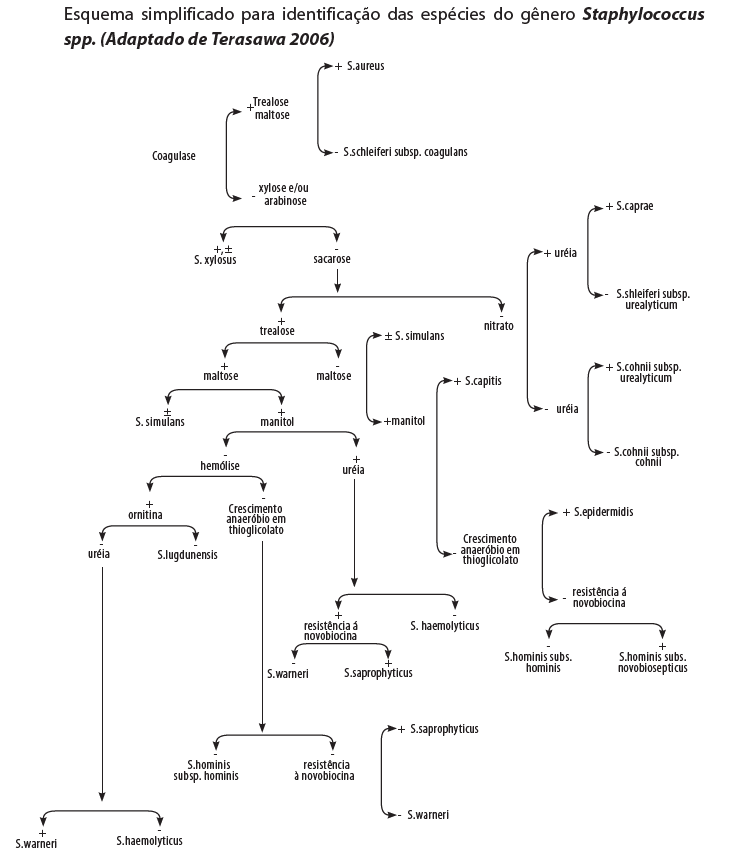
Estreptococos e Enterococos
- Enterococcus faecalis (90% dos casos) e Enterococcus faecium
- contaminação de pacientes e de superfícies
- resistencia a glicopeptídios como a vancomicina e teicoplanina vem sendo cada vez mais comum
Identificação:
- inoculação primária na placa de ágar sangue de carneiro que deve ser incubada em 5% de tensão de CO2 (método da vela ou estufa de CO2)
- estafilococos são geralmente maiores, convexas, de coloração variando do branco-porcelana a amarelo podendo apresentar hemólise ou não.
- estreptococos tendem a ser menores (puntiformes), e com halos de hemólise total ou parcial (beta e alfa hemólise).
- prova da catalase
- diferenciação definitiva
- coleta um pouco de colonia > esfrega em lâmina limpa > uma gota de água oxigenada a 3%
- Staphylococcaceae (estafilococos) faz bolhas
- Streptococcaceae (estreptococos) não faz bolhas
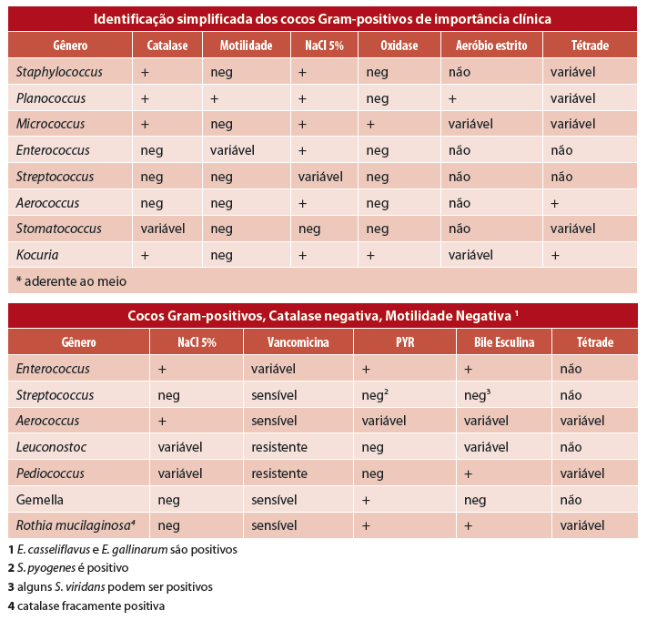
CAPÍTULO 3 - Enterobactérias
- um grande grupo de bacilos Gram-negativos
- 44 gêneros
- 176 espécies
- quatro grupos entéricos ainda não nomeados
- encontradas em solo, agua, frutas, vegetais, carne, ovos
- não esporulados
- motilidade variável
- presença ou ausencia de O2
- meio seletivo: agar macconkey
- maioria catalase positiva, exceto a Shigella dysenteriae
- maioria oxidase negativa, exceto Plesiomonas e Aeromonas sp.
- maioria reduz o nitrato a nitrito
- 80% ou mais de todos os Gram-negativos de importância clínica
- doenças diarreicas, infecções em feridas e queimaduras, infecção no trato urinário e respiratório, septicemia e meningite
- enteropatogênicas:
- Salmonella, Shigella spp., categorias diarreiogênicas de E. coli e Yersinia enterocolitica
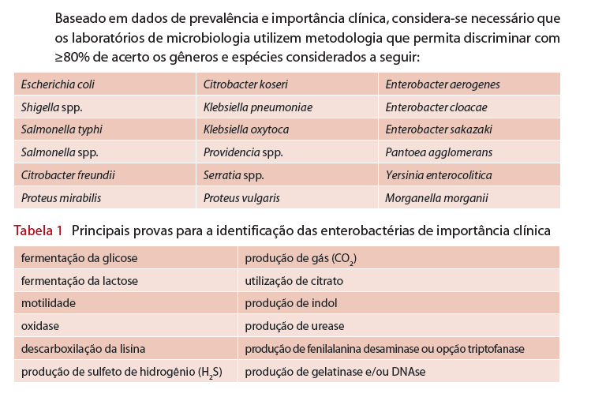
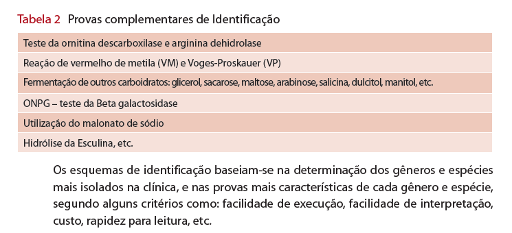
TIPOS DE TESTES
- convencionais: devem ser submetidos a um rigoroso controle de qualidade
- kits comerciais: previamente validados com cepas padrão e desempenho documentado
- metodos automatizados: numero ampliado de testes e maior segurança
- métodos rápidos: substratos cromogênicos para detecção de enzimas produzidas pelas bactérias
MEIOS BIOQUÍMICOS
- Meio de Rugai - modificado por Pessoa e Silva (Meio de IAL - Instituto Adolfo Lutz)
- 9 reações, 1 tubo
- Na fase superior do tubo: fermentação da glicose, produção de gás, fermentação da sacarose, produção de urease, H2S e triptofano desaminase
- camada de cera de carnaúba para separar
- Na fase inferior: a descarboxilação da lisina e motilidade
- tampão: produção de indol
- bacs:
- E. coli, Shigella (indol positiva)
- Shigella (indol negativa)
- Enterobacter aerogenes, Klebsiella pneumoniae, Klebsiella spp. (sacarose negativa)
- Enterobacter cloacae, Providencia spp. (ureia positiva)
- Morganella morganii, Providencia spp. (ureia negativa)
- Proteus mirabilis, Proteus vulgaris, Salmonella spp., Salmonella typhi, Citrobacter freundii, Serratia marcescens (necessita provas complementares)
- Vibrio cholerae, Vibrio spp. (oxidase positiva)
- alguns bacilos não fermentadores
- EPM/MILI/CITRATO: 2 tubos
- EPM: Fermentação da glicose, produção de gás, H2S, ureia, fenilalanina
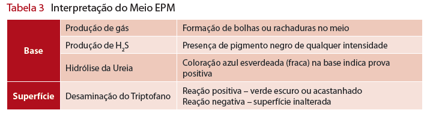
- MILI:
- Motilidade – bactérias móveis crescem além da picada turvando o meio, enquanto as imóveis crescem apenas na linha de picada.
- descarboxilação da lisina – lisina positivo o meio torna-se roxo, na prova negativa o meio permanece amarelado nos ⅔ inferiores
- Após a leitura da lisina adicionar 3 gotas de reativo de Kovacs para o teste de indol – a formação de um anel rosa na superfície do meio indica positividade para o indol.
- Citrato: prova positiva é evidenciada pelo aparecimento de coloração azul na superfície
- TSI - Meio Tríplice Açúcar Ferro
- sistema clássico, fácil interpretação
- necessita de provas adicionais
- O meio é inclinado em bico de flauta, de cor vermelho cereja
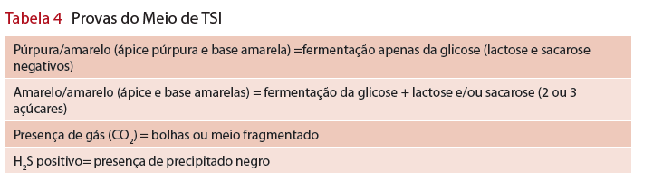
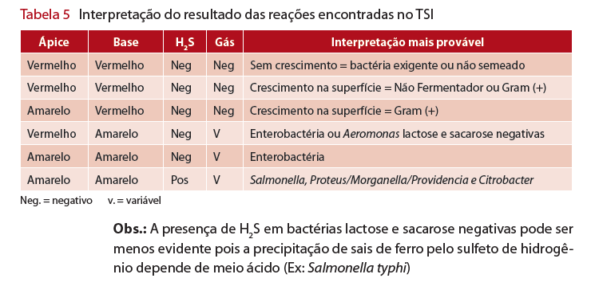
IDENTIFICAÇÃO E DESCRIÇÃO
- Secreções: Ágar sangue e Mac Conkey
- Líquidos nobres e biópsias: Ágar chocolate e Mac Conkey
- Fezes: Mac Conkey e SS
-
Urina: CLED ou Ágar sangue e Mac Conkey
-
Motilidade/H2S/Indol
- Crescimento apenas na linha de picada = motilidade negativa
- Crescimento difuso em todo o meio = motilidade positiva
- H2S – Produção de gás sulfídrico, verificado no TSI ou SIM
- H2S positivo = meio enegrecido
- H2S negativo = cor inalterada do meio
- Indol:
- presença de cor púrpura = indol positivo
- cor do reagente = indol negativo
- Ureia de Christensen
- Urease positivo = cor vermelha (Proteus apresenta reação mais intensa)
- Urease negativo = mantém cor amarelada do meio
- Citrato de Simmons
- Citrato positivo = azul e/ou crescimento no meio
- Citrato negativo = cor verde (inalterado)
- Fenilalanina
- FA positivo = cor verde escuro na superfície
- FA negativo = mantém a cor do meio inalterada
P. 44 A 50 POSSUEM TABELAS COM OS DADOS DE DIFERENCIAÇÃO PRA CADA ENTEROBACTERIA
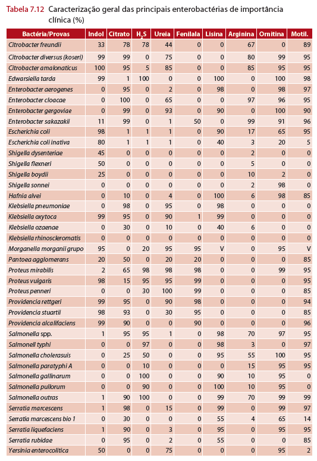
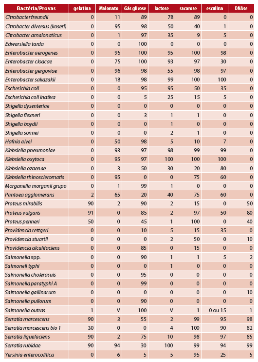
IDENTIFICAÇÃO SOROLÓGICA
As amostras relacionadas bioquimicamente são divididas em subgrupos ou tipos, por critério sorológico, de acordo com a presença dos antígenos somático (O), flagelar (H) e de envoltório ou cápsula (K). Desse modo, os sorotipos são divisões baseadas no relacionamento antigênico, enquanto os biotipos são amostras do mesmo sorotipo que diferem em características bioquímicas.
- Salmonella:
-
3 antissoros:
a) Anti-Salmonella polivalente somático (Grupos A,B,C,D,E)
b) Anti-Salmonella somático, Grupo D (S. typhi)
c) Anti-Salmonella, anti Vi - virulência - soros flagelares (a, b, c, d, i, 1, 2, 5)
-
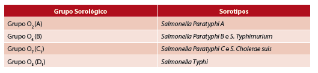
- Shigella:
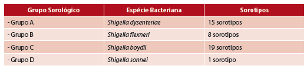
-
Escherichia coli:
As amostras de Escherichia coli que causam diarreia pertencem a cinco grupos principais: E. coli Enteropatogênica (EPEC), E. coli Enterotoxigênica (ETEC), E. coli Enteroinvasora (EIEC), E. coli produtora da toxina Shiga (STEC), a qual inclui o subgrupo referido como E. coli enterohemorrágica (EHEC) e E. coli enteroagregativa (EAEC).
-
Soro Anti E. coli Enteropatogênica Clássica (EPEC):
- Polivalente A: anti 026, 055, 0111, 0119
- Polivalente B: anti 0114, 0125, 0142,0158
- Polivalente C: anti 086, 0126, 0127, 0128
- Soro Anti E. coli Enteroinvasora (EIEC):
- Polivalente A: anti 028ac, 029, 0136, 0144, 0152
- Polivalente B: anti 0112ac, 0124, 0143, 0164, 0167
- Soro Anti E. coli O 157 (EHEC):
- utilizar o soro para O157:H7